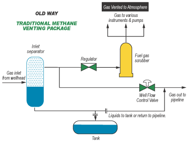
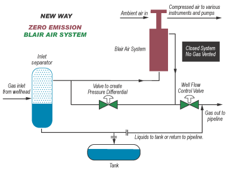

The Zero Emission Blair Air System eliminates methane emissions from commonly used pumps and instruments at oil and gas well sites. The system, developed and implemented in Alberta, Canada, works by redirecting gas that would otherwise be vented into the atmosphere to compress air for pneumatic instrumentation, pumps, and controls. The Blair Air System is economical, and suitable even for remote sites, as it does not consume fuel nor does it require electricity to operate. Since the venting of methane is eliminated with this technology (not just reduced), the amount of methane emission reduction is easily tracked by measuring or calculating the existing vent volume per unit of time. Each installed Zero Emission Blair Air System can provide reductions of approximately 740 tons of CO2e per year.
The figures below illustrate the differences between a standard oil and gas well site system and the Zero Emission Blair Air System.

In a typical gas well separator layout, a portion of the gas is regulated to a lower pressure, then piped to a fuel gas scrubber vessel. From the scrubber vessel, gas is distributed to operate instrumentation and chemical/methanol injection pumps. "Spent" gas is then vented to the atmosphere.

In a gas well separator layout incorporating the Blair Air System, energy is harnessed to compress air for instrumentation and pumps. Gas is not vented to the atmosphere.